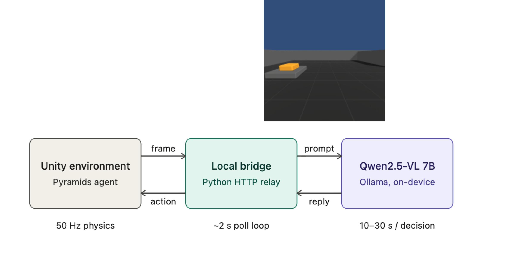
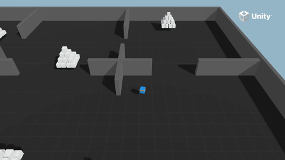
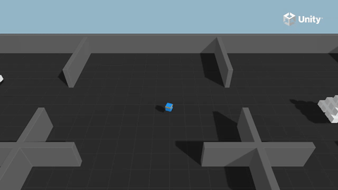

Abstract
In this project, we explore multi-agent collaboration and using vision language models (VLM) as a communication layer. We present a multi-agent system and a VLM controlled agent built on top of the Unity ML-agents Pyramids reinforcement learning environment. We study whether a VLM conditioned on the visual observations of multiple agents can replace the conventional learned communication channel — substituting opaque real-valued vectors with human-interpretable natural language scene descriptions and sub-goals. We also explore the use of VLMs for direct locomotion and discuss its pitfalls and potential use as a planning layer. Finally, we introduce a three-stage curriculum learning schedule that decomposes the sparse-reward Pyramids task into sub-skills, yielding a 61.9% win rate versus 18.4% for the baseline at matched compute — a 3.4× relative improvement.
Results & Key Contributions
1 — VLM Action Controller

Fig. 1 — VLM control loop. At each step the Unity environment captures an egocentric camera frame and sends it over HTTP to a Python bridge, which constructs a natural-language prompt and queries Qwen2.5-VL 7B running locally via Ollama. The model returns a structured JSON object (scene description, high-level command, low-level action) that the bridge forwards back as a discrete action. The mismatch between Unity's 50 Hz physics and the model's 10–30 s inference time is the central bottleneck explored in Section 3.
2 — Multi-Agent Role Decomposition (MA-POCA)
🔘
ButtonPresser (πB)
The only agent that can flip the hidden switch. Role lock is enforced at Unity's collision layer — the switch script returns early for any non-buttonPresser tag.
🏆
GoldCollector (πC)
The only agent that can end the episode by touching the gold brick. Neither agent can solo the task — both must coordinate to earn the shared team reward.
🤝
MA-POCA Training
Centralized training, decentralized execution. A shared value function Vteam(sB, sC) is trained jointly; at execution each policy sees only its own observations.
3 — Curriculum Learning Results

Win rate 18.4% at 1.5M steps. The terminal-only reward provides too little signal to bootstrap the 4-step behavioral chain; the agent spends most of training timing out at r ≈ −0.5.

Win rate 61.9% at matched compute — a 3.4× improvement. Two lesson transitions visible at 340k (L0→L1) and 430k (L1→L2) steps as the agent progressively learns each sub-skill.
3.4×
win-rate improvement
61.9%
curriculum win rate
18.4%
baseline win rate
1.5M
training steps (matched)
Video Demos
Curriculum Learning vs. Baseline
Agent behavior at 1.5M training steps. The curriculum decomposes the sparse-reward task into three lessons (gold-only → nearby switch → full task), enabling a 3.4× win-rate improvement.
Baseline PPO+ICM — 18.4% win rate at 1.5M steps. The agent frequently times out without completing the 4-step behavioral chain.
Three-stage curriculum — 61.9% win rate at matched compute. The agent reliably presses the switch, triggers the pyramid spawn, and reaches the gold brick.
Successful curriculum episode — the agent presses the switch (spawning the gold pyramid), knocks it over, and reaches the gold brick for the +2 terminal reward.
Full Training Runs (1.5M Steps)
Complete recorded training sessions. The curriculum run shows two visible inflection points at the L0→L1 (340k) and L1→L2 (430k) lesson transitions.
Baseline training (1.5M steps) — reward stagnates near −0.5 throughout. The terminal-only reward signal is too sparse to bootstrap the 4-step chain from scratch.
Curriculum training (1.5M steps) — two inflection points at lesson transitions (L0→L1 at 340k, L1→L2 at 430k steps), then steady climb into positive reward.
VLM Action Controller
Qwen2.5-VL (7B) replaces the trained PPO policy as a zero-shot controller. The model receives an egocentric camera frame each step and returns structured JSON with scene description, high-level command, and low-level action.
Single-agent VLM controller — perception is the strong half: the model reliably names corridors, walls, and the switch in its scene_description. Acting on that understanding is where it breaks down, with 10–30s decision latency vs. Unity's 50 Hz physics.
VLM multi-agent simulation — the VLM processes joint observations from both the ButtonPresser and GoldCollector, generating natural-language sub-goals that serve as the interpretable communication channel between agents.
Paper
BibTeX
@inproceedings{mo2026multiagent,
title = {Multi-Agent Collaboration and VLM Action Controllers},
author = {Mo, Athena and Lee, Victor and Xu, Zhao and Kumar, Ramnath},
booktitle = {UCLA CS275 Artificial Life Term Project},
year = {2026},
url = {https://f26cs275.github.io/CS275-Project-Page}
}